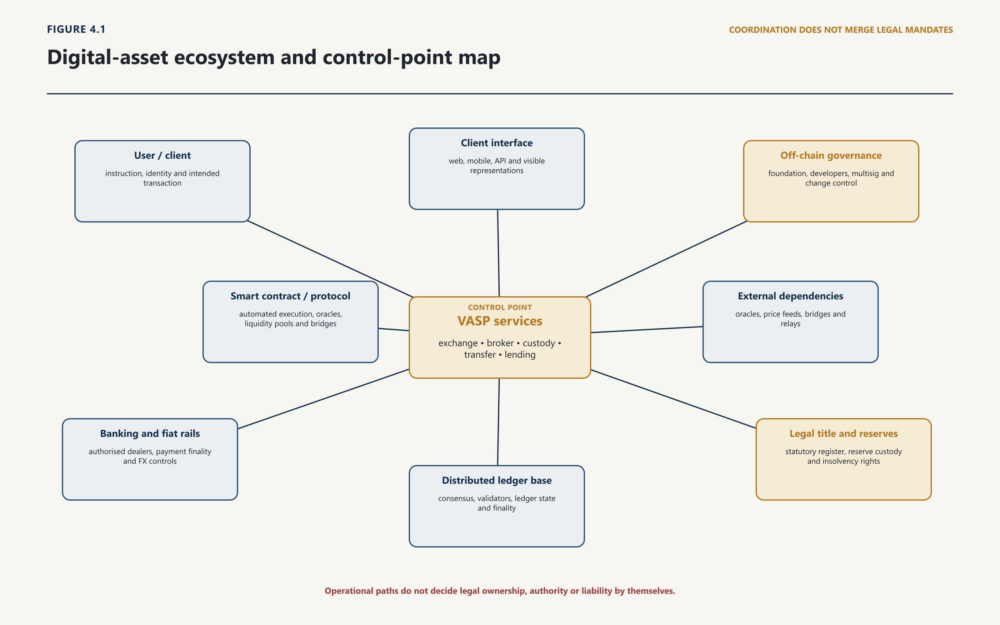
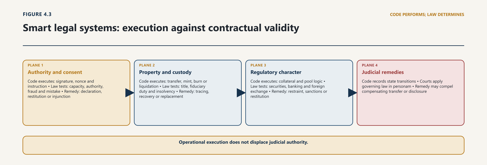
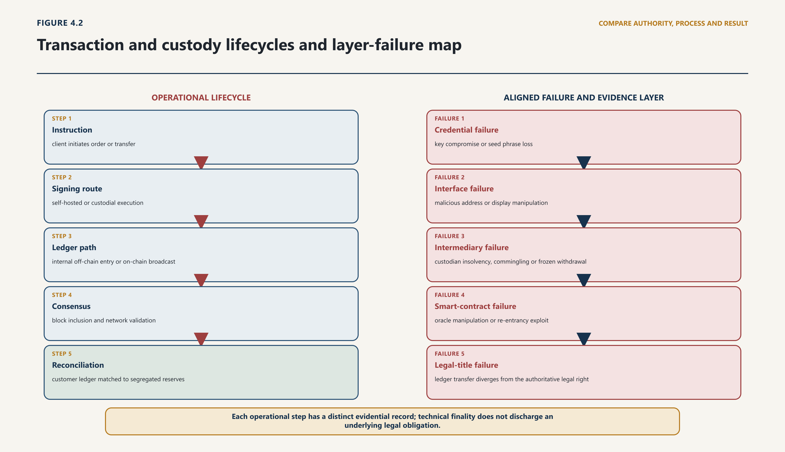

Chapter Four · Part 1
Code: Digital-Asset Technologies, Functions and Control
4.1 A Functional Method
4.1.1 From product names to operative facts
1
Digital-asset language often compresses several different things into one word. “Bitcoin” may refer to a protocol, a network, its native unit, software used to interact with it or an economic community. “Wallet” may mean an interface, a key-management device, a custodial account or an institutional service. “Exchange” may describe a legal person, a website, an order book, a matching engine, a custody arrangement or the transaction that results. That compression is convenient in ordinary speech and dangerous in legal analysis.
4.1.2 Asset, activity, actor, infrastructure and control
2
This chapter therefore uses five separate objects. The asset or representation is the unit, ledger entry, identifier or claim said to carry value. The activity is what is done: issuing, exchanging, transferring, safeguarding, validating, lending, advising or administering. The actor is the natural or legal person—or organised group of persons—performing, directing, operating, governing or materially facilitating the function; beneficiaries and affected interests are identified separately. The infrastructure is the ledger, software, interface, hardware, oracle, bridge, communications system or authoritative off-chain record on which the function depends. The control point is the practical capacity to sign, pause, upgrade, list, validate, censor, recover, redeem or change parameters. Access to decisive information is recorded separately as an evidence point, whether or not it carries power to intervene.
3
These objects frequently separate. A token contract can exist on a public network while an issuer controls minting and redemption. A customer can appear to use an on-chain address while a platform holds the key and records trades only on its internal database. A protocol can be open-source while a small group controls its interface, treasury and emergency key. An entry can be technically transferable while the represented off-chain claim is legally non-transferable. The method therefore begins with function and control, not the name chosen by a promoter.
4
The method is deliberately modest. It does not ask this chapter to decide whether an asset is money, property, a security, a commodity or a contractual right. Nor does it assume that every technically important participant is a regulated service provider. It asks for the factual architecture needed to make those legal decisions responsibly. That orientation is consistent with international frameworks that focus on activities, functions and risks rather than self-description, and with the Virtual Assets Act, 2026, which defines virtual-asset services through scheduled categories and authorises substantive classification.1
5
The discipline is easiest to see when the five objects come apart, which in practice they usually do. A customer opens what a website calls a “wallet”. The asset is a fiat-referenced token issued abroad. The activity is safekeeping combined with exchange. The actor operating the interface may be a marketing entity distinct from the group company that signs transactions, which may itself rely on a third-party key-management vendor. The infrastructure spans a public ledger, the issuer’s redemption system, an internal customer database and a correspondent bank. The control points are scattered: whoever can suspend withdrawals, freeze the token at the contract level, hold the reserve or delist. One product name has concealed five legal questions and at least four candidate duty bearers, and none of them can be recovered from the label.
6
Legal consequence. A product label cannot determine the regulatory perimeter, identify the duty bearer or resolve liability. Those conclusions require a proved relationship among the asset, activity, actor, infrastructure and control point.
4.2 Ledgers and the Architecture of State
4.2.1 Consensus, validation, ordering and finality
7
A blockchain is a form of distributed ledger: participating systems maintain and update a shared record according to defined rules. NIST describes blockchains as tamper-evident and tamper-resistant digital ledgers implemented in a distributed fashion. The qualifications matter. Distribution does not mean that every participant has equal influence; tamper resistance does not mean metaphysical immutability; and the absence of a central repository does not prove the absence of administrators, developers, concentrated validators or other control points.2
4.2.2 Forks, governance and state changes
8
The ledger records state. In Bitcoin’s unspent-transaction-output model, a transaction consumes previously unspent outputs and creates new ones; value is reconstructed by following the chain of valid outputs. In an account model such as Ethereum’s, the system maintains account state, balances, nonces, code and storage, and valid transactions update that state. Both architectures allow public verification under their respective rules, but they generate different records and different ways of describing a balance, tracing a transfer and proving which input authorised a state change.3
9
Transactions do not become authoritative merely because a user presses “send”. A transaction is constructed, signed, communicated, validated and included according to network rules. Consensus mechanisms allow participating nodes to agree on an accepted history or state despite distributed operation. Proof of work links block production to computational work; proof of stake links proposal and attestation functions to staked value and protocol-defined rewards and penalties. The time at which a transaction becomes practically final differs by network. Some systems provide probabilistic confidence as more blocks are added; others identify protocol states described as justified or finalised. Network finality remains a technical conclusion. It does not answer whether the transaction was authorised in law or whether a court can order a person to restore equivalent value.4
10
A token is not a tiny object stored inside a wallet. It is a ledger entry or state representation governed by a native protocol or a deployed program. A native asset is integral to the network’s own rules—for example, as a unit used to pay transaction fees or reward consensus participation. A custom token is created through additional logic, often a smart contract on an existing network. ERC-20 specifies a common interface for balances, transfers and approvals; ERC-721 specifies an interface for uniquely identified non-fungible tokens. These standards improve technical interoperability. They do not certify the issuer, the represented asset, the accuracy of metadata, the existence of a reserve or the legal rights of the holder.5
11
Permission models add another axis. A permissionless network generally permits participation without approval from a single gatekeeper, although practical barriers and concentrated services may remain. A permissioned ledger restricts participation, validation or data access to approved actors. Neither model is inherently “public” or “private” for every legal purpose. The relevant facts include who may write, validate, inspect, change software and admit participants, and whether alternative implementations or governance routes exist.
12
It is equally important to state what the ledger does not record. It records that a state transition satisfying protocol rules occurred. It does not record the purpose of the transfer, the capacity in which the signer acted, the terms of any underlying agreement, the beneficial owner, or whether consideration passed off-chain. A ledger is a register of authorised state changes, not of authorised transactions in the legal sense. The distinction matters wherever a later chapter must decide whether an obligation was discharged, a disposal occurred for revenue purposes, or a transfer defeated a prior interest — each requiring evidence the ledger was never designed to hold.
13
Figure 4.1 locates these technical components within the wider service system.

14
Figure 4.1 locates the technical components within the wider service system, mapping how client interfaces connect to VASP services, base ledgers, smart contracts, oracles, cross-chain bridges, banking rails and the underlying real-world legal title registries. Solid connections show an operational path; the diagram does not imply that every component is a separate legal person, a regulated service or of equal importance. Its purpose is to stop the visible token transfer from concealing the issuer, interface, reserve, governance arrangement or infrastructure on which it depends.
15
Accessible reading note: the adjoining prose restates every material relationship; labels, sequence and line meaning — not colour alone — carry the figure’s analysis.
16
Legal consequence. Ledger architecture affects the evidence available, the point at which technical finality is claimed and the persons capable of intervention. It does not convert network state into conclusive proof of consent, ownership, authority or legal finality.
4.3 Keys, Wallets and Control
4.3.1 Private keys, custody and signing authority
17
Public-key cryptography structures practical control of many digital assets. A private key can generate a signature that the network verifies against a corresponding public key or address. In an externally controlled Ethereum account, for example, a valid key permits the holder to initiate transactions associated with that account; a contract account, by contrast, is controlled by deployed code. The ledger holds the account state. The “wallet” is normally the interface or system used to manage keys and interact with that state.6
4.3.2 Why control is not necessarily ownership
18
This yields a critical distinction. A private key proves that a transaction was signed using the relevant cryptographic credential. It does not, without more, prove the signer’s identity, legal capacity, authority from the beneficial owner, freedom from coercion or entitlement to the asset. A thief who obtains a seed phrase may possess effective signing power without acquiring title. An employee may hold a signing share for a company without beneficial ownership. A trustee or custodian may control transfer while another person holds the economic interest. Conversely, a person may own or be entitled to an asset while lacking unilateral signing power. “Control” must therefore be stated with its object: control of a credential, account, withdrawal process, contract function, governance vote, reserve or legal entity.
19
Stating control with its object turns an unhelpfully broad word into an answerable set of questions. Who can produce a valid signature today, and does that take one person or several? Who can change the number of signatures required? Who can suspend, delay or reverse a withdrawal properly requested? Who can freeze a balance at the token-contract level, independently of the platform? Who controls the recovery route if a credential is lost, and who can alter the internal record of what the customer is owed? Each has a different holder and a different evidentiary trail, and the Act engages several at once by separating customer assets, requiring segregation and imposing key-management controls.7 A provider may truthfully say it does not hold the customer’s keys while retaining every one of the other powers.
20
Wallet architecture changes how that control is distributed. In a self-hosted arrangement, the user or an agent chosen by the user manages the credential without a service provider possessing the means to transfer on the user’s behalf. In a hosted arrangement, a provider controls the signing system and owes the customer a contractual or other entitlement reflected in its records. A hybrid arrangement can divide authority—for example, between user and provider, or between an online transaction system and an offline recovery process. Hierarchical deterministic designs can derive many keys from a seed; compromise of the relevant seed or derivation path can therefore affect a family of accounts rather than one address.8
21
Institutional custody commonly adds further layers. Assets may be allocated to separate on-chain addresses or pooled in omnibus addresses while customer entitlements are recorded in an internal ledger. “Hot” keys remain available to connected systems for routine withdrawals; “cold” arrangements reduce online exposure but can slow access and introduce physical, procedural and personnel dependencies. Multisignature arrangements require a defined number of keys to authorise an action. Multiparty-computation systems can divide the production of a signature among participants without reconstructing a single complete key at one point. These techniques can reduce single-point compromise, but their legal significance depends on the actual policy: who holds shares, who can alter thresholds, who controls recovery, which approvals can be overridden and what evidence survives.
22
Custody also creates a reconciliation problem. The provider must be able to connect on-chain assets, internal customer liabilities and any fiat or reserve accounts. A public address balance cannot by itself show that each customer’s entitlement has been recorded correctly or that assets are unencumbered. A proof-of-reserves exercise may attest to controlled assets at a time, but without liabilities, legal ownership, reserve quality and assurance scope it cannot establish solvency or customer recovery. IOSCO therefore treats safeguarding, segregation, reconciliation, internal controls and disclosure as connected features of custody rather than assuming that possession of keys is sufficient.9 Pakistan’s Act follows the same functional concern by separating customer assets, requiring segregation, imposing custody and key-management controls, and contemplating proof-of-reserves reconciled against customer liabilities.10
23
Loss and recovery depend upon this architecture. A self-hosted user may bear the operational consequence of losing an unrecoverable key. A custodial customer may instead face provider fraud, insolvency, frozen withdrawals, deficient books or legal uncertainty over pooled assets. Social recovery, administrator intervention or a reversible permissioned system may restore access, but also creates a person or mechanism capable of overriding ordinary control. The question is not whether one model is universally superior. It is whether the model, authority and risk allocation are accurately disclosed and legally recognised.
24
Legal consequence. Custody analysis must distinguish cryptographic signing capability, operational access, legal authority, ownership, beneficial entitlement and recovery rights. Neither a key nor a platform account resolves those questions by itself.
4.4 Digital-Asset Taxonomy
4.4.1 Native assets, utility, governance and asset-referenced tokens
25
An asset taxonomy should classify what the digital unit does and what, if anything, stands behind it. It should not allow technical design or marketing language to answer the legal question in advance. Five recurring families are sufficient for the report’s later analysis, although a single arrangement may be hybrid or change over time.
4.4.2 Stablecoins, tokenised claims, NFTs and real-world assets
26
Native network assets arise under the rules of their own ledger. They may be used for transaction fees, consensus incentives or transfers between participants. Their value need not be a claim against an issuer, and there may be no person promising redemption. The absence of an issuer does not eliminate actors such as developers, validators, exchanges and custodians, but it changes the kind of claim a holder can assert and the person against whom it might run.
27
Stable-value arrangements seek to maintain a reference value, commonly against an official currency or a class of assets. “Stablecoin” is not a guarantee and FATF describes it as a marketing rather than clear legal or technical category.11 The operative facts include who issues and destroys units; what reserve or stabilisation method exists; who holds reserve assets; whether the holder has a redemption right; at what value and time redemption occurs; how governance and data are organised; and what happens in stress or insolvency. The FSB’s recommendations consequently address the global stablecoin arrangement, not the token in isolation.12 Pakistan’s Act distinguishes fiat-referenced and asset-referenced tokens and links them to reserve, custody, disclosure and redemption functions. That statutory vocabulary supplies a perimeter; the existence and enforceability of each underlying arrangement still require evidence.
28
Tokenised claims and real-world-asset representations use a ledger entry to represent money, a security, a receivable, a commodity interest, real estate or another off-chain asset or obligation. Tokenisation may combine recordkeeping, transfer and programmed actions on a platform, but the underlying right depends on the legal bridge: issuance terms, property or securities law, the authoritative register, custody of the underlying, transfer formalities, insolvency treatment and enforcement. A token can move flawlessly while the off-chain asset never existed, remained in another person’s name, was pledged twice or could not lawfully be transferred. The CPMI/BIS framework therefore treats tokenisation as a process and architecture involving assets, participants and platform functions, not as self-proving title.13
29
Non-fungible identifiers assign unique token identifiers rather than interchangeable balances. An ERC-721 token can point to metadata or be associated with a digital or physical item, but the technical standard does not decide copyright, title to a physical object, authenticity, licence terms or permanence of linked data.14 The identifier may be on-chain while the image, document or registry is stored elsewhere. Legal analysis must examine the contract, metadata location, issuer representations and the law governing the represented interest.
30
Taxonomy is also temporal. A unit may begin as access to an unfinished network, later acquire governance or revenue features, become widely traded and then lose the service on which its original description depended. A fiat-referenced unit may change its reserve, redemption terms or administrator. Classification evidence therefore requires a defined date and version; an issuer’s launch description cannot permanently govern a changing arrangement.
31
Utility, governance and hybrid units may provide access to a service, confer a vote, allocate rewards, evidence membership or combine these functions with investment expectations. A governance token may permit formal voting while a separate multisignature, company or developer group retains decisive upgrade or emergency power. A token described as “utility” may be sold to finance development and trade on secondary markets. Classification must therefore follow rights, obligations, distribution, economic function and actual control over time.
32
The following matrix is a navigation device, not a legal conclusion.
33
Each row identifies facts requiring proof. Inclusion in a row does not imply legal status, quality, market importance or regulatory approval.
| Technical/economic form | Claimed value or interest | Critical actors and evidence | Question transferred to later chapters |
|---|---|---|---|
| Native network asset | Protocol-defined unit; no necessary redemption claim | Network rules, validators/miners, developers, service gateways | Property, payment, tax, custody and jurisdiction |
| Fiat-referenced token | Reference to official currency | Issuer, reserve custodian, bank, attestor; reserve and redemption records | Money/payment perimeter, reserve rights, insolvency and disclosure |
| Asset-referenced token | Reference to one or more assets | Issuer, custodian, valuation and redemption agents | Nature of underlying, custody, valuation and holder’s enforceable claim |
| Tokenised financial or proprietary claim | Security, receivable, deposit, commodity or property interest | Legal issuer/obligor, authoritative registry, custodian, transfer agent | Whether token transfer legally transfers or merely records the interest |
| Non-fungible token | Unique identifier and associated metadata/terms | Creator, issuer, storage provider, marketplace, rights holder | Title, licence, authenticity, consumer representation and evidence |
| Utility/governance/hybrid unit | Access, voting, reward or mixed entitlement | Promoter, treasury, administrators, governance participants | Substance-over-form classification, conflicts and control |
34
Legal consequence. Technical form narrows the questions but cannot answer them. A legally reliable classification must establish the represented interest, the person bound, the authoritative record, the conditions of transfer or redemption and the allocation of loss if the representation fails.
4.5 Service-Provider Taxonomy
4.5.1 Exchange, transfer, custody, dealing and intermediation
35
Assets reach users through services. The regulatory task is therefore not exhausted by identifying a token or network. It must establish what a person does as a business, for whom the function is performed, what property or information is controlled and which functions are combined. FATF’s VASP definition is deliberately functional: it covers specified exchange, transfer, safeguarding/administration and financial services connected with issuance when conducted as a business for or on behalf of another person. Pakistan’s Act adopts “Virtual Asset Service Provider” as its primary term and creates a broader scheduled catalogue of regulated services.15
4.5.2 Issuance, brokerage, settlement and infrastructure functions
36
Terminology note. This report uses VASP as its primary cross-border and Pakistan term. Other systems use different labels for differently drawn perimeters: the European Union commonly uses “crypto-asset service provider” (CASP), while Hong Kong uses “virtual asset trading platform” (VATP) for licensed platform operators and also regulates relevant activities of licensed corporations. These terms are not assumed to be interchangeable.16
37
An exchange operator converts fiat currency and virtual assets, converts one virtual asset into another, matches orders or maintains an order book. A broker or dealer may receive, arrange or execute orders, act as principal, make markets or distribute an issuer’s units. The difference matters even where the same interface performs both. An exchange may present itself as a venue while also taking the opposite side of customer trades; a broker may route orders to another venue; an over-the-counter desk may negotiate bilaterally without a visible order book. The evidence lies in order flow, execution policy, principal positions, spreads, fees and settlement records.
38
A custodian or administrator safeguards virtual assets, credentials or other means of access and acts on customer instructions. A provider may control on-chain keys, operate withdrawal approvals and maintain an internal customer ledger; it may also outsource portions to a sub-custodian, technology vendor or cloud service. The mere supply of non-custodial software or hardware is analytically different where the customer retains exclusive transfer control. That exclusion cannot be accepted from branding: recovery routes, embedded administrators, transaction co-signing and provider overrides must be tested.
39
An issuer or arrangement operator creates or originates units, controls initial supply, manages reserve or stabilisation functions, arranges redemption, publishes information and may retain governance power. Issuance can therefore be distinct from development or promotion. A developer who writes code without control over supply, reserve or distribution occupies a different position from a legal person promising redemption. Conversely, an entity need not write the code to bear responsibility for the arrangement it creates and operates.
40
Transfer, payment and settlement providers move virtual assets on behalf of customers or connect them with fiat and commercial obligations. An on-chain transfer service is not the same as a merchant payment interface, and neither necessarily produces legal settlement of the underlying sale. The relevant facts include whose address is used, whether the provider can stop or reverse processing, when customer accounts are credited, who bears price or timing risk and what record discharges the obligation.
41
Other functions complete the ecosystem. Advisers and managers recommend or administer transactions and may stake assets on a customer’s behalf. Lending, borrowing and derivatives services intermediate claims whose return or payoff depends on virtual assets. Infrastructure providers supply nodes, cloud services, analytics, wallets, interfaces, code, oracle data or bridges. Some supply technology without carrying on a regulated customer-facing function; others actively facilitate it or possess control sufficient to make the infrastructure description incomplete. The legal perimeter must therefore be established separately for each function.
42
Pakistan’s Schedule I recognises advisory, broker-dealer, custody and administration, exchange, lending and borrowing, derivatives, management and investment, transfer and settlement, issuance, and customer-facing mining-related services. This catalogue is wider than FATF’s AML/CFT definition and must not be collapsed into it. Nor should the statutory list conceal vertical integration: one group may issue a token, admit it to trading, custody customer assets, execute against customers, lend those assets and control withdrawals. IOSCO identifies such combinations as a source of conflicts, misuse of assets, opacity and operational concentration.17
43
Vertical integration also defeats the assumption that one licence describes one risk. Where an affiliated group issues a unit, admits it to trading on its own venue, quotes prices against its own customers, holds those customers’ assets, lends them out and controls the withdrawal switch, the failure of any one function propagates to the rest through a single balance sheet. The customer sees one brand. The analysis must still proceed function by function, because the duty bearer, the standard of conduct and the remedy differ across them. Group structure is therefore an operative fact, not background: which entity contracts with the customer, which holds the assets, which employs the personnel with signing power, and which insolvency law governs each.
44
This table must be read with Table 4.1. A technical component is not a VASP merely because it is necessary; a provider does not escape analysis merely by calling a controlled service ‘software’.
| Service function | Operational evidence | Decisive control point | Legal question transferred |
|---|---|---|---|
| Exchange / matching | Order book, matching and execution records | Listing, matching, suspension and settlement controls | Venue rules, market conduct, conflicts, finality |
| Broker / dealer | Customer orders, routing and principal trades | Execution discretion, inventory and counterparty choice | Agency, best execution, dealing and disclosure |
| Custody / administration | Key policy, addresses, internal ledger, withdrawal process | Signing, recovery, freeze and reconciliation authority | Safeguarding, segregation, insolvency and liability |
| Issuance / stable-value arrangement | Mint/burn, distribution, reserve and redemption records | Supply, reserve, governance and redemption control | Classification, disclosure, reserve and holder claim |
| Transfer / payment / settlement | Instruction, routing, credit and confirmation records | Ability to submit, delay, reject or reverse | Payment discharge, AML/CFT data, evidence and loss |
| Lending / staking / derivatives / management | Contract, collateral, delegation and payoff records | Liquidation, reuse of customer collateral, validator and discretion rights | Financial perimeter, client assets, risk and conflicts |
| Infrastructure / interface | Code, APIs, node, oracle, bridge and hosting records | Admin keys, upgrades, data supply and service access | Outsourcing, operational resilience, attribution and reach |
45
Legal consequence. Regulation follows functions actually performed and control actually exercised. Each combined function must be identified separately because licensing, conduct, custody, financial-integrity and conflict duties may attach on different grounds.
4.6 Smart Contracts, Oracles and Bridges
4.6.1 Execution and external data dependencies
46
A smart contract is program code and data deployed at an address and executed when called by a transaction or another contract. It can transfer tokens, apply collateral rules, calculate entitlements, create new units or coordinate several applications. Its deterministic execution can reduce some forms of discretion and make stated logic inspectable. The phrase “smart contract”, however, does not establish that a legal contract exists. Code may implement all or part of an agreement, operate without an identifiable bilateral bargain, contain a defect inconsistent with the parties’ terms, or be subject to an administrator capable of changing its effect.18
4.6.2 Bridge risk, upgrade authority and decentralisation claims
47
Smart contracts cannot natively know many facts outside their ledger. An oracle supplies external data—such as a price, event or identity assertion—so that code can act upon it. That creates an oracle problem: the contract may execute exactly as written using information that is inaccurate, delayed, manipulated or unavailable. Relevant control may sit with data publishers, aggregation rules, node operators, update thresholds or an administrator who selects the feed. A “decentralised oracle” must therefore be analysed by the diversity and incentives of its sources and operators, not its name.
48
A bridge connects separate ledgers or layers. In bridge designs documented for Ethereum, an asset may be locked in one system while a representation is minted in another, a representation may be burned before release, or transfers may be coordinated through validators, relayers or liquidity providers. The user may see a single cross-chain action while assuming the security and finality risks of two networks plus bridge contracts, administrators, message verification and any custodian of locked assets. Depending on the design, the destination-chain unit may be a distinct representation or claim whose value depends on the bridge’s ability and willingness to honour the return path.19
49
These components produce composability: one protocol can use tokens, prices or positions generated by another. Composability allows rapid construction but can transmit failure. A faulty oracle can trigger liquidations in dependent contracts; a compromised bridge can leave destination tokens unbacked; an upgrade to one protocol can affect services that incorporated it. Technical modularity therefore does not necessarily diversify responsibility. It may make dependency and control harder to see.
50
“Decentralised finance” should be treated as a claim about an arrangement, not a jurisdictional exemption. IOSCO directs regulators to identify products, services, activities, arrangements and responsible persons by examining governance, design, operation and control rather than relying on terminology.20 FATF similarly distinguishes the software itself from creators, owners, operators or other persons who retain control or sufficient influence over a DeFi arrangement. A person may facilitate covered activity through a front end, fee structure, governance mechanism or continuing operational role even where transactions are executed by code.21
51
A control-spectrum inquiry should ask:
52
who deployed the code and whether it can be upgraded, paused or replaced;
53
who holds administrative, emergency, oracle or treasury keys;
54
who controls the principal interface, domain, branding and user access;
55
who selects assets, collateral parameters, fees and revenue recipients;
56
whether voting power is concentrated, delegated or constrained by off-chain action;
57
who communicates with users, maintains the system and responds to incidents; and
58
whether an apparently autonomous arrangement depends on an identifiable company, foundation, team, validator set or service provider.
59
No single answer is decisive. Immutable code may coexist with a centrally controlled interface; distributed voting may coexist with concentrated token holdings; an administrator may possess emergency power but be legally constrained; a genuinely uncontrollable protocol may still be accessed through regulated intermediaries. The inquiry locates functions and evidence before later chapters decide jurisdiction and duties.
60
The same analysis can be arranged by legal plane rather than by control point, and the two views are complementary. On authority and consent, code verifies that a signature matches a public key; it cannot establish that the signer had authority, capacity or free consent. On property and custody, code moves an output; it cannot determine whether lawful title passed or whether a custodian’s statutory duties were breached. On regulatory characterisation, code executes a liquidation; it cannot decide whether the arrangement was an unlicensed dealing, an unregistered offer or a deposit taken without authority. On judicial remedies, code can make technical rollback impossible; it cannot extinguish a court’s power to act against a person, compel restitution or trace proceeds. Technical irreversibility is an operational property of distributed software, not an immunity from the rule of law.

61
The figure deconstructs smart contracts across four legal planes — authority and consent; property and custody; regulatory characterisation; and judicial remedies. For each plane it separates what the code executes from what the law requires and from the remedy that remains available. It is the visual statement of this section’s conclusion: operational execution does not displace judicial authority.
62
Accessible reading note: the adjoining prose restates every material relationship; labels, sequence and line meaning — not colour alone — carry the figure’s analysis.
63
Legal consequence. Decentralisation cannot be inferred from open-source code, automated execution or distributed validation. Demonstrated governance, influence, intervention capacity and service performance across the complete arrangement are facts to be carried into the later legal-responsibility inquiry; they do not predetermine its result.
4.7 Mining, Validation, Energy and Infrastructure
4.7.1 Consensus participation and reward
64
Consensus participants perform a network function distinct from exchange, custody or issuance. In proof-of-work systems, miners assemble candidate transactions and compete through computational work to add a block; accepted work helps order the transaction history and makes alteration increasingly costly. In proof-of-stake systems, validators commit value under protocol rules and are selected to propose or attest to blocks, with rewards and penalties intended to align behaviour. The security assumptions, concentration risks, hardware needs and finality mechanisms differ between networks.22
4.7.2 Electricity, equipment, hosting and environmental consequences
65
Mining or validation is not a single legal category. A person may participate for its own account, operate equipment for another, host equipment, sell computing capacity, pool rewards, manage customer stakes, custody validator or withdrawal credentials, or promise a financial return. Each configuration changes the activity, customer relationship and control point. Pakistan’s Act reflects the distinction: it defines virtual-asset mining, states that pure mining by itself is not a licensed virtual-asset service, brings operations involving customer assets or funds within the service perimeter, and permits registration or declaration thresholds based on scale, energy use or hash rate.23
66
Infrastructure claims require evidence of operation. A memorandum, public announcement, power-allocation proposal or procurement plan does not prove that equipment was acquired, connected, validated transactions, consumed a stated quantity of electricity or produced assets. Verification may require site, grid-connection, metering, hardware, pool, node, address, accounting and environmental records. The same discipline applies to validator projects: a stated intention to stake does not establish funded validators, uptime, reward receipt or lawful custody.
67
The Act supplies the frame within which those facts matter. It treats mining as a defined activity, states that mining on one’s own account is not by itself a licensed virtual-asset service, brings operations involving customer assets or funds inside the service perimeter, and contemplates registration or declaration thresholds keyed to scale, energy use or hash rate.24 Each turns on a measured quantity rather than a description, and each therefore fails silently if the measurement is never taken: capacity thresholds require metered load, hash-rate thresholds require attributable pool data, and a declaration regime requires a register someone maintains and someone inspects. Without that measurement infrastructure the statutory line between the unlicensed own-account miner and the licensed customer-facing operator cannot be drawn at the margin, which is where it decides cases.
68
The evidentiary asymmetry is worth stating plainly. Announcements are cheap and public; operations are expensive, private and rarely disclosed. A public commitment of surplus generation capacity to a mining programme can be reported and cited for years without a single machine being energised. The response is not scepticism about the policy but insistence on the record: interconnection approval, metered consumption, hardware, the pools to which work was directed, the addresses that received rewards and the accounts recognising them. Until those exist, a mining programme is an intention, and its contribution to revenue or grid utilisation is unproved.
69
Energy is relevant but network-specific. Proof-of-work expenditure is integral to its consensus design; proof-of-stake uses a different security resource. Data-centre location, electricity source, heat, grid constraints, equipment lifecycle, telecommunications resilience and concentration may matter to public policy. Those questions belong to evidence and infrastructure planning, not generic slogans that all digital assets consume the same energy or that mining automatically monetises surplus power.
70
Concentration must also be measured at the correct layer. Many nominal miners may direct work to a small number of pools; many validators may depend on the same client software, cloud provider, relay or staking intermediary. A pool coordinator, node host and owner of computing or staked resources perform different functions. Their separate records are necessary to assess operational resilience, attribution, rewards and effective influence.
71
Legal consequence. Consensus participation must be separated from customer-facing financial service and from announced national infrastructure. Regulation, tax, energy allocation and public accountability depend on the actor’s actual function, scale, resources, custody and proved operation.
4.8 Transaction and Custody Lifecycles
4.8.1 Initiation, authorisation, broadcast, settlement and record
72
A digital-asset transaction should be analysed as a sequence, not a moment. In a self-hosted on-chain transfer, the user or wallet constructs an instruction identifying the destination, amount, fee and other protocol data. The relevant key signs it. Software sends it to a node; it propagates through the network; validators test it against protocol rules; it is included in a block or equivalent record; and the system reaches the relevant degree of finality. A valid signature and accepted state transition prove defined technical facts, but not the signer’s legal identity or authority.25
4.8.2 Where failure, evidence and legal responsibility arise
73
A custodial transaction can follow a different route. When customers trade inside one platform, the provider may update its internal database without placing each trade on-chain. The on-chain movement may occur later in aggregate, when assets are deposited to or withdrawn from the platform. This can improve speed and cost, but it makes the provider’s books, reconciliation and controls indispensable. A customer’s screen balance is then evidence of a claim recorded by the provider, not necessarily a separately identified balance at a public address. NIST accordingly distinguishes on-chain token movement from off-chain accounting and describes wallets through interface, custody and protocol views.26
74
Issuance and redemption add another lifecycle. The arrangement accepts fiat or assets, creates units, records a holder’s entitlement, manages reserve assets, permits secondary transfers, receives a redemption instruction, destroys or withdraws units and releases the promised asset or value. Failure can occur even when the token contract functions: the reserve may be deficient, inaccessible, misvalued, encumbered or held by an insolvent custodian; the issuer may reject redemption; banking rails may be unavailable; or the token holder may lack a direct legal claim.
75
Figure 4.3 combines the paths while preserving their differences.

76
Figure 4.3 follows the end-to-end operational lifecycle from customer instruction to settlement reconciliation, contrasting the self-hosted and custodial execution paths, and sets against them the evidentiary layers at which failure arises. The path identifies where different evidence is generated. It does not state that every service follows every step, or that technical finality discharges an underlying legal obligation.
77
Accessible reading note: the adjoining prose restates every material relationship; labels, sequence and line meaning — not colour alone — carry the figure’s analysis.
78
Failure analysis should identify both event and layer. At the credential layer, a key may be lost, copied or used without authority. At the interface layer, malware or a deceptive address may alter the instruction shown to the user. At the provider layer, fraud, deficient authorisation, an inaccurate internal ledger, commingling or withdrawal suspension may intervene. At the code layer, a defect, unexpected interaction or administrator action may alter execution. At the oracle or bridge layer, external data or cross-system verification may fail. At the network layer, congestion, reorganisation, validator concentration or chain governance may affect inclusion and finality. At the off-chain legal layer, the reserve, title record, bank, custodian or obligor may fail even though every on-chain step succeeds.
79
Evidence must correspond to the alleged failure. Relevant material may include the signed transaction, hash, block and event logs; wallet and device logs; access records; provider authorisation and withdrawal records; internal ledger entries; customer statements; source code and deployed bytecode (the compiled executable program); audit and reconciliation records; communications; oracle inputs; bridge messages; reserve and bank records; corporate and governance decisions; and proof linking an address or credential to a person. Public blockchain data can establish recorded events and support tracing. It does not automatically establish identity, legal purpose or admissibility without a reliable method and chain of explanation.
80
The correspondence works in both directions, and the second is the one usually neglected. Just as an allegation dictates what evidence is required, the evidence obtainable dictates which allegations can responsibly be made. A claim that a particular person authorised a transfer needs proof linking that person to the credential at the material time, which on-chain data alone cannot supply. A claim of commingling needs the provider’s internal ledger and reconciliation records, which no public explorer holds. Framing a case around what the ledger conveniently shows, rather than what the duty and the loss require, is the commonest error in this field.
81
Control affects remedy. A provider may freeze an internal account or decline a pending withdrawal; a protocol administrator may pause a contract; an issuer may redeem or reissue; a validator may reject an invalid transaction but ordinarily cannot adjudicate a private dispute; a court may order a controllable person to act even when it cannot rewrite a public ledger. Technical irreversibility therefore changes available relief but does not erase legal claims. Later chapters must distinguish restitution of the original unit, delivery of an equivalent asset, damages, tracing, injunction, account correction and regulatory action.
82
Legal consequence. Liability, proof and remedy follow the actual lifecycle and failure point. “The blockchain did it” is not an explanation: the inquiry must identify the instruction, credential, record, dependency, responsible actor and feasible point of legal intervention.
4.9 The Code-to-Law Handoff
4.9.1 Facts requiring legal characterisation
83
Chapter 4 supplies a common factual language for the report. Later analysis should not begin with “crypto” as a single sector. It should identify the asset or representation; state the performed activity; name the actors; describe the essential infrastructure; and locate each material control point. Only then should it ask which law, institution, duty, evidence and remedy apply.
4.9.2 Control points requiring institutional responsibility
84
The handoff operates in three directions. To Law, the taxonomy transfers questions of classification, competence and responsibility: what right exists, which public authority may regulate the function, which person owes the duty and what remedy is executable. To Capital, it transfers questions of value and risk: what finances what, who holds reserves or collateral, where revenue accrues, how infrastructure is funded and who absorbs failure. To strategic and anticipatory legal intelligence, it transfers dependencies and change variables: which actor or technical component could alter the result, what evidence would reveal change, and which lawful instrument could respond.
85
The later chapters must preserve several non-equivalences established here:
86
Each row states a technical fact and the legal conclusion it does not, without more, establish.
| Technical fact | Conclusion it does not establish |
|---|---|
| Valid signature | Identity, legal authority, consent or ownership |
| On-chain token entry | Title to, custody of or enforceability against an off-chain asset |
| Technical finality | Discharge of an obligation or absence of remedy |
| Open-source code | Absence of responsible persons or control |
| Governance vote | Equal, effective or legally accountable power |
| Proof of assets/reserves | Complete liabilities, solvency or insolvency-remoteness |
| Licence for one service | Permission for every function in a vertically integrated group |
| Project announcement | Operational infrastructure, realised investment or public benefit |
87
For the reader, the method is repeatable. Begin with the transaction or service under examination; draw its operational path; identify every ledger and off-chain record; mark each person able to change, stop or evidence a material step; and record what remains unknown. The resulting map should travel with the legal proposition. If a later chapter changes the assumed architecture, it must state the change rather than silently inherit a different product model.
88
Because the architecture is not static, the taxonomy must carry its own review conditions. Four variables move often enough to falsify a settled classification, and each has an observable trigger. Control migrates when an administrator key is renounced or, more often, quietly created; the trigger is a change in the upgrade or pause authority. Function migrates when an interface that merely displayed prices begins to route orders or hold balances; the trigger is the first customer asset the operator can move. Backing migrates when a token’s reserve composition, custodian or redemption terms change; the trigger is any amendment to the redemption promise. Jurisdictional exposure migrates when a service begins to onboard residents, accept the local currency or advertise domestically; the trigger is the first local fiat rail. A classification recorded without its date, version and review trigger will be wrong before it is relied upon, and the party relying on it will not know.
89
That discipline is the chapter’s substantive output. It allows the report to describe technology without surrendering analysis to technical labels and to analyse law without inventing a system different from the one users and institutions actually operate.
90
Legal consequence. A later conclusion is materially incomplete unless it identifies the relevant asset, activity, actor, infrastructure and control point, or expressly states that an object is absent, irrelevant or remains unproved after inquiry. The taxonomy transfers proved questions forward; it does not pre-decide the answers.
Chapter 4 Conclusion
91
The legal significance of a digital asset begins with technical precision. A regulator or court must know which ledger records the event, who controls the relevant keys and interfaces, which off-chain systems complete the transaction, and where an administrator, issuer, custodian or bridge can intervene. A token label cannot answer those questions.
92
The functional method developed here carries those facts into the legal inquiry without prejudging it. Code establishes capability and records; law separately determines title, authority, duty and remedy. That distinction is the necessary handoff from technical architecture to legal classification.
Footnotes
- ↑ Virtual Assets Act 2026 (Act No XIII of 2026) (‘VAA’), ss 3(1)(xxxii)–(xxxiii), 6(f), 18 and sch I; Financial Stability Board, Global Regulatory Framework for Crypto-asset Activities (17 July 2023) 4–7 <https://www.fsb.org/2023/07/fsb-global-regulatory-framework-for-crypto-asset-activities/> accessed 15 August 2026.
- ↑ Dylan Yaga, Peter Mell, Nik Roby and Karen Scarfone, Blockchain Technology Overview (NISTIR 8202, National Institute of Standards and Technology 2018) 1–2, 7–9 and 29–33, DOI: 10.6028/NIST.IR.8202.
- ↑ Loic D Lesavre, Priam C Varin and Dylan J Yaga, Blockchain Networks: Token Design and Management Overview (NISTIR 8301, National Institute of Standards and Technology 2021) 5–10, DOI: 10.6028/NIST.IR.8301; Ethereum Foundation, ‘Ethereum Accounts’ (Ethereum.org) <https://ethereum.org/developers/docs/accounts/> accessed 15 August 2026.
- ↑ Satoshi Nakamoto, ‘Bitcoin: A Peer-to-Peer Electronic Cash System’ (31 October 2008) 2–4 <https://bitcoin.org/en/bitcoin-paper> accessed 15 August 2026; Ethereum Foundation, ‘Proof-of-Stake (PoS)’ (Ethereum.org) <https://ethereum.org/developers/docs/consensus-mechanisms/pos/> accessed 15 August 2026.
- ↑ Ethereum Improvement Proposals, ‘ERC-20: Token Standard’ (EIP-20, November 2015) <https://eips.ethereum.org/EIPS/eip-20> accessed 15 August 2026; William Entriken and others, ‘ERC-721: Non-Fungible Token Standard’ (EIP-721, January 2018) <https://eips.ethereum.org/EIPS/eip-721> accessed 15 August 2026; Lesavre, Varin and Yaga (n 3) 5–10.
- ↑ Ethereum Foundation, ‘Ethereum Accounts’ (n 3); Yaga and others (n 2) 11–14.
- ↑ VAA, ss 3(1)(v), 24 and 26–27.
- ↑ Lesavre, Varin and Yaga (n 3) 11–17; Pieter Wuille, ‘Hierarchical Deterministic Wallets’ (Bitcoin Improvement Proposal 32, 10 February 2012) <https://github.com/bitcoin/bips/blob/master/bip-0032.mediawiki> accessed 15 August 2026.
- ↑ International Organization of Securities Commissions, Policy Recommendations for Crypto and Digital Asset Markets: Final Report FR11/23 (November 2023) recommendations 6–7.
- ↑ See n 7.
- ↑ Financial Action Task Force, Updated Guidance for a Risk-Based Approach to Virtual Assets and Virtual Asset Service Providers (October 2021) para 13 n 3.
- ↑ Financial Stability Board, High-level Recommendations for the Regulation, Supervision and Oversight of Global Stablecoin Arrangements: Final Report (17 July 2023) 3–5 and recommendations 2–9 <https://www.fsb.org/2023/07/high-level-recommendations-for-the-regulation-supervision-and-oversight-of-global-stablecoin-arrangements-final-report/> accessed 15 August 2026.
- ↑ Committee on Payments and Market Infrastructures and BIS Innovation Hub, Tokenisation in the Context of Money and Other Assets: Concepts and Implications for Central Banks (Bank for International Settlements, October 2024) 3–11 and 24–29 <https://www.bis.org/cpmi/publ/d225.htm> accessed 15 August 2026.
- ↑ Entriken and others (n 5), especially ‘Abstract’ and ‘Motivation’.
- ↑ Financial Action Task Force (n 11) paras 44–55; VAA, ss 3(1)(xxxii)–(xxxiii), 18 and sch I.
- ↑ Regulation (EU) 2023/1114 of the European Parliament and of the Council on markets in crypto-assets [2023] OJ L150/40, art 3(1)(15); Securities and Futures Commission of Hong Kong, ‘Virtual Asset Trading Platform Operators’ <https://www.sfc.hk/en/Welcome-to-the-Fintech-Contact-Point/Virtual-assets/Virtual-asset-trading-platforms-operators> accessed 15 August 2026. The terminology note does not equate these perimeters with the FATF or Pakistan VASP definition.
- ↑ VAA, sch I; International Organization of Securities Commissions (n 9) recommendations 1–5.
- ↑ Ethereum Foundation, ‘Introduction to Smart Contracts’ (Ethereum.org) <https://ethereum.org/developers/docs/smart-contracts/> accessed 15 August 2026; Yaga and others (n 2) 34–36.
- ↑ Ethereum Foundation, ‘Oracles’ (Ethereum.org) <https://ethereum.org/developers/docs/oracles/> accessed 15 August 2026; Ethereum Foundation, ‘Bridges’ (Ethereum.org) <https://ethereum.org/developers/docs/bridges/> accessed 15 August 2026.
- ↑ International Organization of Securities Commissions, Final Report with Policy Recommendations for Decentralized Finance (DeFi) FR14/23 (December 2023) 4–8 and recommendations 1–3.
- ↑ Financial Action Task Force (n 11) paras 67–68.
- ↑ Nakamoto (n 4) 3–4; Yaga and others (n 2) 22–29; Ethereum Foundation, ‘Proof-of-Stake (PoS)’ (n 4).
- ↑ VAA, s 37 and sch I item 10.
- ↑ See n 23.
- ↑ Ethereum Foundation, ‘Transactions’ (Ethereum.org) <https://ethereum.org/developers/docs/transactions/> accessed 15 August 2026; Lesavre, Varin and Yaga (n 3) 18–31.
- ↑ Lesavre, Varin and Yaga (n 3) 11–18 and 23–27.